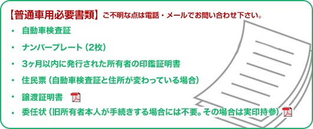
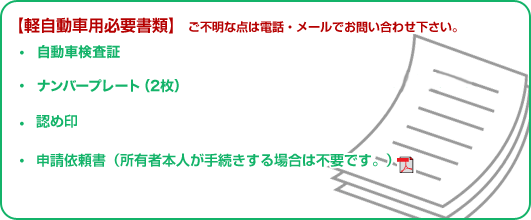

トップページ > 廃車時必要書類
廃車時必要書類
■廃車（抹消登録）には二通りあります。 ・第15条の抹消登録（永久抹消） 事故や解体等、自動車として使用できなくなったときに行う抹消登録。再使用不可。 なお、第15条抹消登録をしても抹消登録証明書は交付されません。 自賠責保険などの解約や、別の自動車を同じ場所に駐車するための車庫証明の申請等で 抹消したことを証明するものが必要な場合は、登録事項等証明書の交付を請求しましょ う。 ※登録事項証明書が必要な場合は1,000円の手数料がかかります。 ・第16条の抹消登録（一時抹消） 長期出張等で使用を一時的に中止しようという場合に行う抹消登録。 譲渡や再使用が可能。 第16条抹消登録の手続きが終了すると、抹消登録証明書が交付されます。 再び自動車を使用するために新規登録を行うときや、抹消登録されたまま他人に譲渡す る場合に必要になります。抹消登録証明書は紛失しても再発行されないので、大事に保 管しましょう。 |

※譲渡証明書と委任状のダウンロードはこちらから↓ |
|  |
|
※譲渡証明書と委任状のダウンロードはこちらから↓ |
|
◎県外ナンバーのお車の廃車をご希望の方は、直接お電話でお問い合わせ下さい。 |
|
【注意点】 ローン完済の方は当社で所有権解除の手続きも代行させていただいております。 ご不明な点は当社へお気軽にお問合せください。 |
- 中古部品
- 当社在庫はもちろんお探しの部品を全国からお取り寄せできます!
- 中古部品を探す
- リサイクル料金システム
- リサイクル料金は車によって異なります。
- 詳しくはコチラ
- 引取り対応地域
- ■奈良県
生駒市/奈良市/大和郡山市/
天理市/香芝市/桜井市/
葛城市/大和高田市/橿原市/
宇陀市/御所市/五条市/
平群町/斑鳩町/安堵町/
三郷町/河合町/川西町/
上牧町/広陵町/田原本町/
三宅町/高取町/大淀町/
吉野町/下市町/山添村/
曽爾村/御杖村/明日香村/
東吉野村/黒滝村/川上村/
天川村/野迫川村/上北山村/
下北山村/十津川村
■大阪府
河内長野市/南河内郡/
富田林市/千早赤阪村/
/羽曳野市/藤井寺市/
■和歌山県
橋本市/紀の川市/
かつらぎ町/高野町/
九度山町/
- お気軽にお問合せください。
- 0745-62-1230
- AM8:00～PM6:00（月～金）AM8:00～PM5:00（土）※日曜・祝日は定休日
- お問合せフォームへ